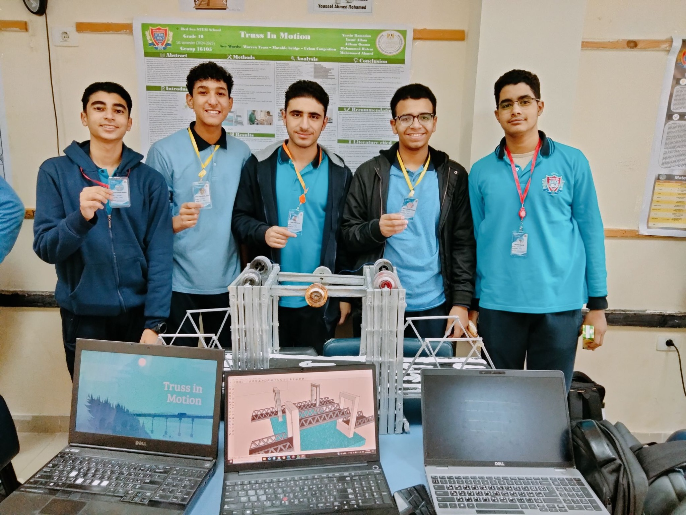
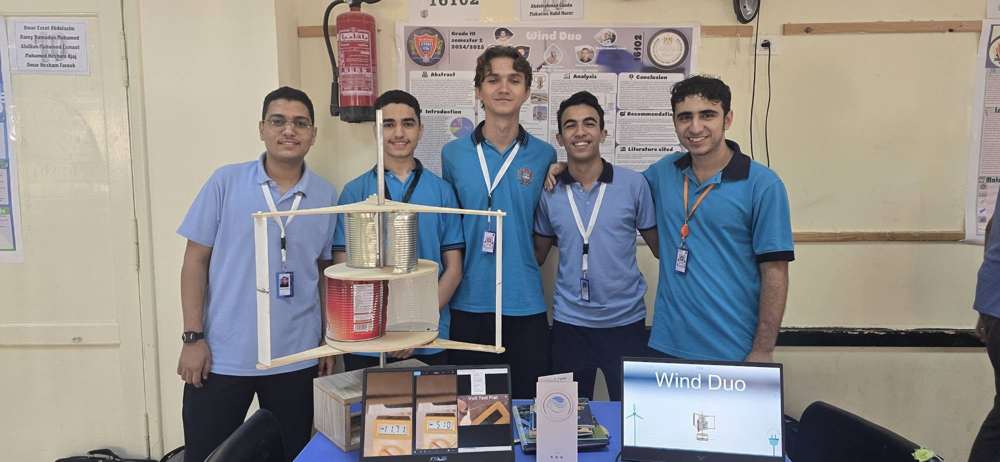
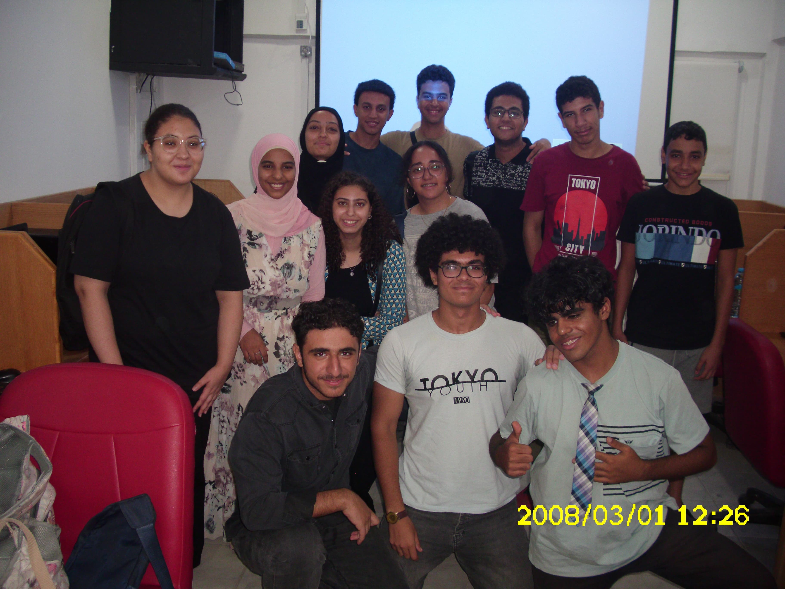
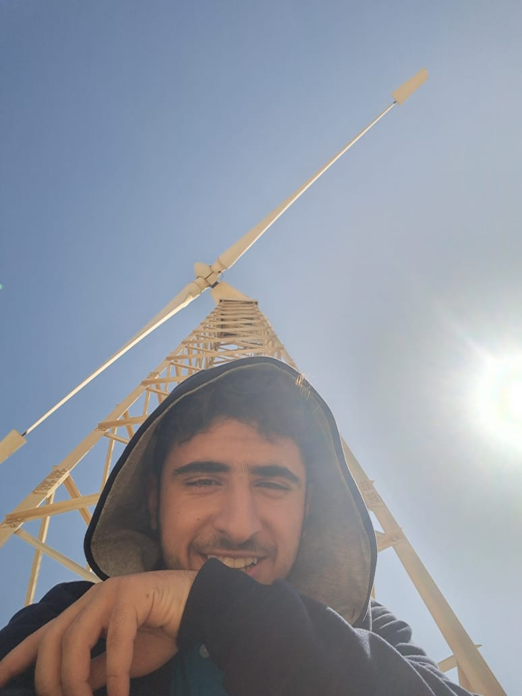

Yusuf Allam (first and last name, there are a lot of names in between).
17 years old. A high school student and some of my hobbies are chess, anime, video games and listening to music.
Your average teen :) . I am interested in STEM subjects especially Physics, Technology and Math. One thing I like that these subjects have in common is logic.
This increases in programming. Every action and error has a reason and everything I do has a direct impact.
I liked how in control I feel while I am coding. The fact that I am responsible for everything and every error that happens in my code.
And accordingly, I started improving in this field. My school was the perfect environment for such improvements.
Surrounded with like-minded students filled with dedication and competitiveness. A community with supportive and fun friends is what helped me thrive.
School
Currently in grade 11 in Red Sea STEM high school. One of a few special public high schools in Egypt with intense focus on STEM subjects.
A boarding school, university-like system with presentations, tasks, laptops and a capstone project each semester.
The school had a difficult and stressful environment but helped us improve and gain valuable skills.
Additionally, there were student-made school clubs in various subjects. I am currently an active member of the Fablab club - Robotics Branch and the Programming club - Competitive Programming Branch.
I didn't join the Web Development branch because I already learned what they were teaching and I wanted to increase my critical thinking by practicing competitive programming.
Web and programming
I have always been a computer lover. First started with playing video games and surfing the web. As time passed by I started to wonder how these things actually work.
Started learning HTML & CSS. Of course, I learned later that they are not programming languages but it was the first step in learning about code and how the web works.
Later on, learned some JS. Also learned the basics of Python and C++ to get a better grasp of programming basics.
Joined DECI (Digital Egyptian Cubs Initiative) and dived more into Web Development, Front-End Development at first. Finished Level 2 (Basic Introduction into all tech fields),
Level 3: Web Development (Chose a path to specialize in, learned the basics.) and currently wrapping up Level 4: Web Development (Dived deeper into more complex concepts.)
At the moment, I am skilled at HTML, CSS and client-side JS. Recently took a glimpse of some Back-End like NodeJS, Back-End frameworks like Express, and Libraries.
I have always found it fascinating how I could write a few lines of code and have an immediate result in form of a webpage in front of me. And a few fields provided this thrill like Web Development.
The goal is to always improve and learn something new and what I lack most is experience. Therefore, I am practicing my skills and building projects. And my first real project is this personal website.
Gallery

Grade 10, first semester's Capstone Project

Grade 10, second semester's Capstone Project

DECI Level 3 last summer session

Field Trip to a local wind farm